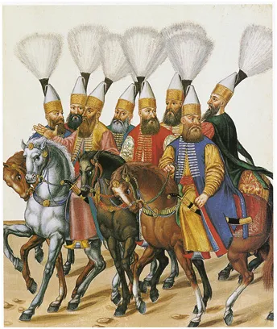

EctoLife - super janczarzy XXI wieku?
Czasem słyszymy o janczarach, coś wiemy, że były to doborowe odziały tureckie. Kultura turecka jest wypadkową wielu tradycji i dla nas bardzo dziwna. Janczarzy to przewrotna idea. Aby uniknąć ryzyka zdrady w armii stacjonującej nieopodal pałacu sułtana stworzono doborowe odziały z ludzi bez tożsamości. Janczarzy, byli to mali chłopcy zabierani z podbitych terenów chrześcijańskich, skoszarowani i wychowywani w zakonnej regule. Byli dobrze kształceni, indoktrynowani na islam i nie mieli nic poza oddaniem dla sułtana. Żaden turecki ród nie mógł mieć wpływów w armii poprzez rodzinne powiązania i podobne relacje. Taka była idea i trwała wieki.
Człowiek wychowany w ścisłej regule, poza rodziną to dla naszej kultury zupełnie obca idea. Znamy ją z totalitarnych systemów, które nas doświadczyły. Sieroty w internatach wychowywane przez partię to koszmarna wizja, która trwała kilka wojennych lat. Janczarzy, to instytucja i grupa społeczna obecna w tureckim świecie blisko 600 lat. Mimo sprytnej idei, aby stanowić bezpiecznik w systemie, ci oddani gwardziści bywali zagrożeniem dla sułtana. Czując swą siłę podnosili bunty. Po części to ich tradycja jeszcze w XX wieku pozwalała legalnie armii wprowadzać zamachy stanu i zmieniać rządy.

Idea EctoLife, produkcja ludzi bez matki, w sztucznych macicach zabiera człowiekowi nawet dzieciństwo. Janczarów rekrutowano spośród 7. latków i starszych chłopców. Obywatele przyszłości nie będą znali pojęcia matki i ojca. Nie możemy sobie nawet wyobrazić kim będzie taki człowiek. Mamy sporo szczęścia, że tego się nie dowiemy.
Paweł Klimczewski